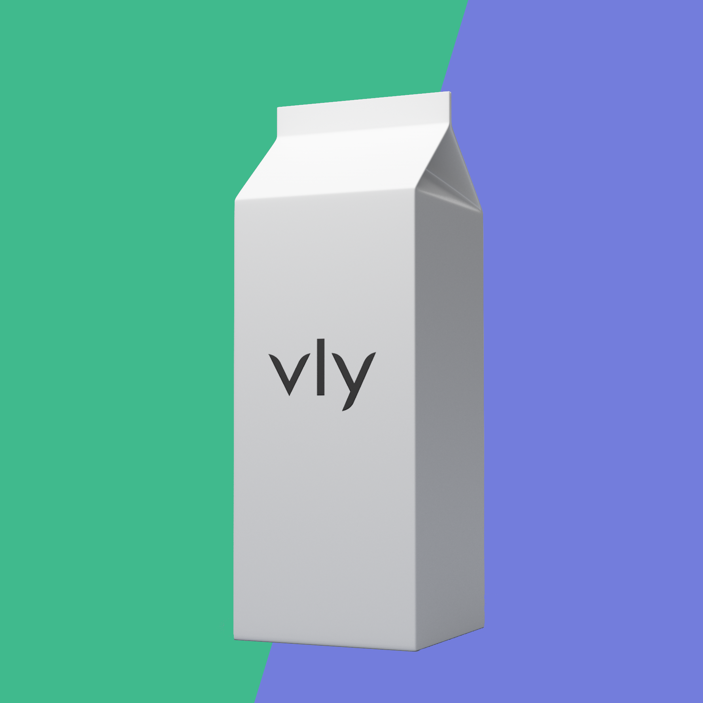
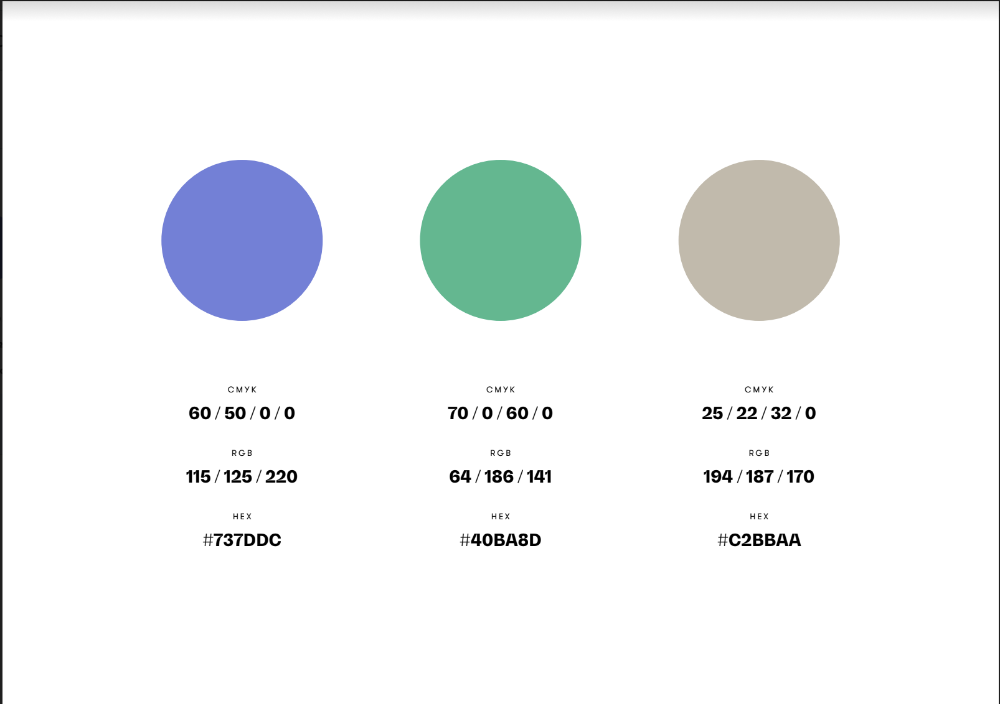
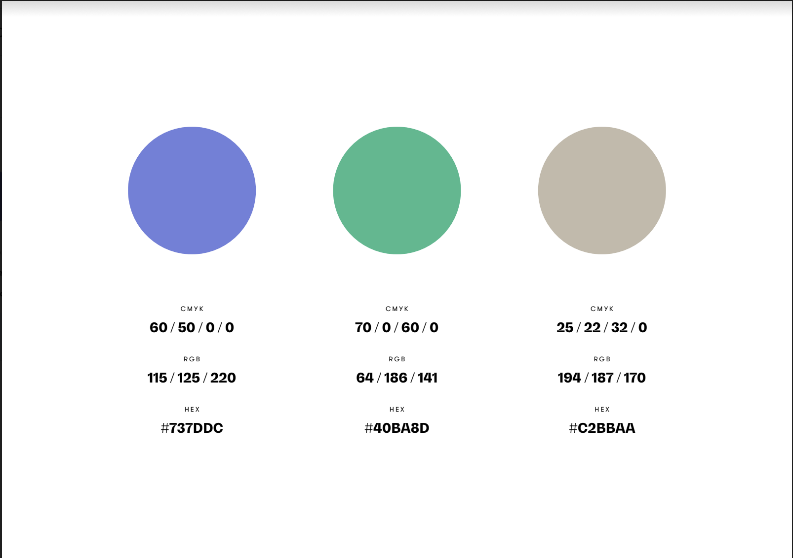
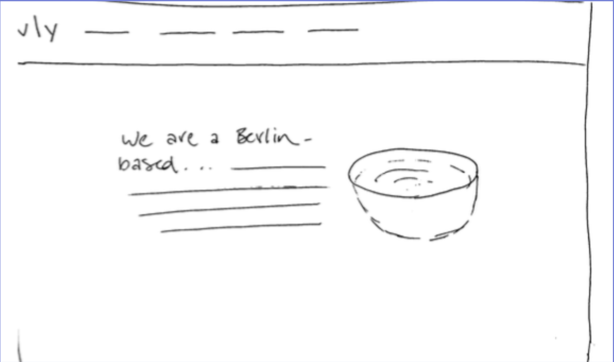
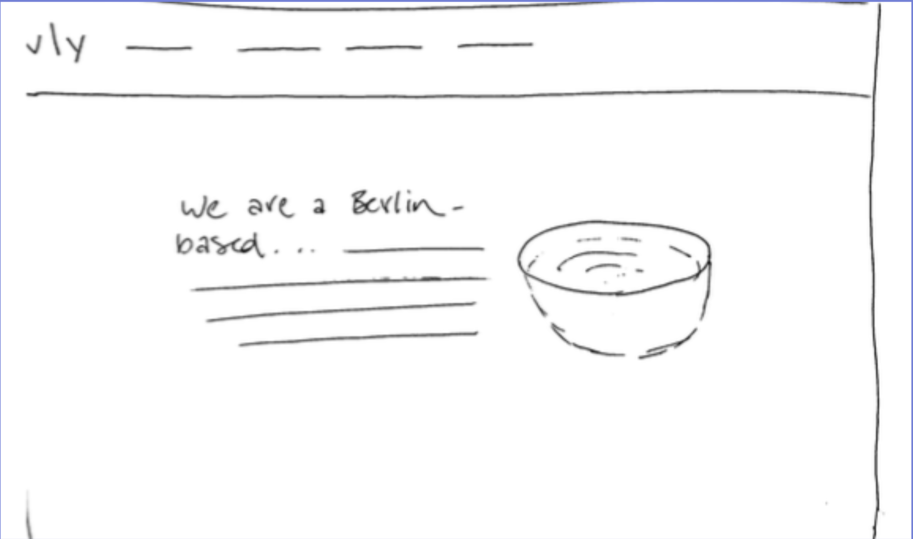
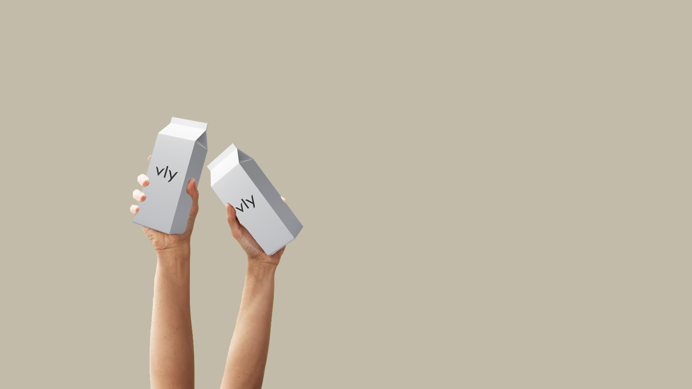
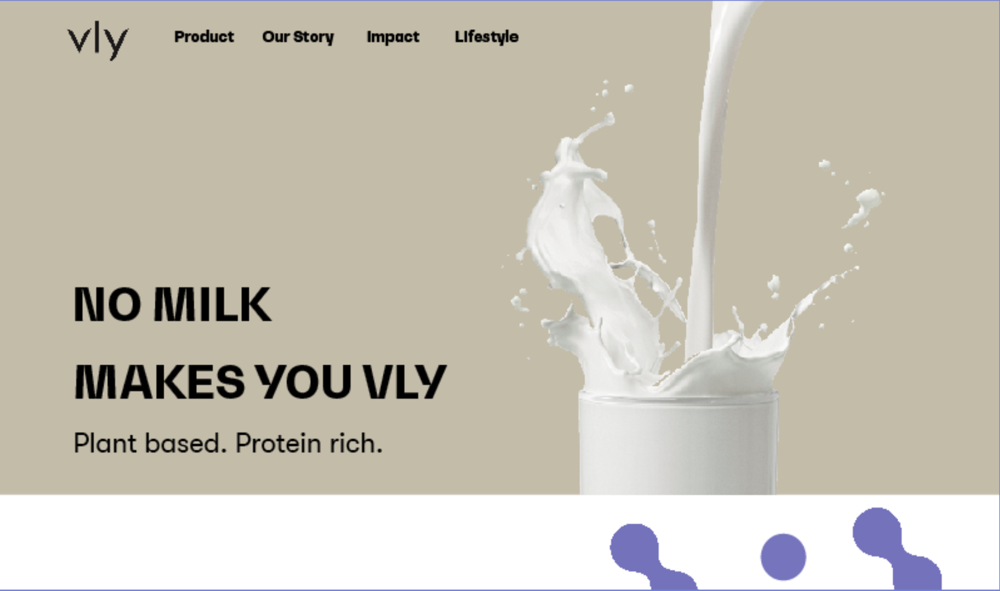
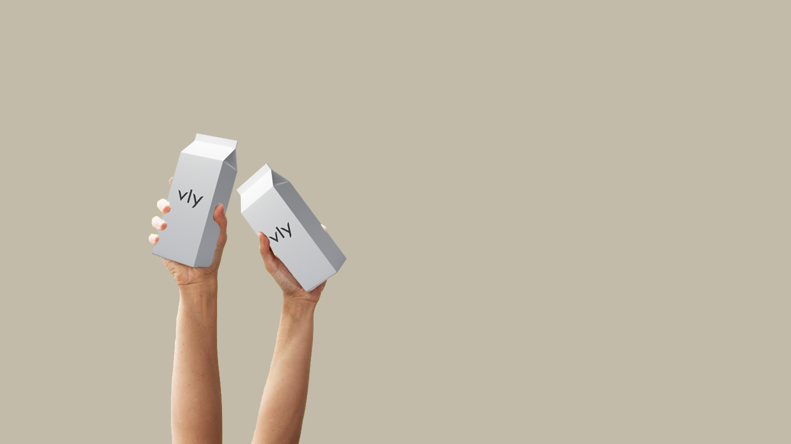
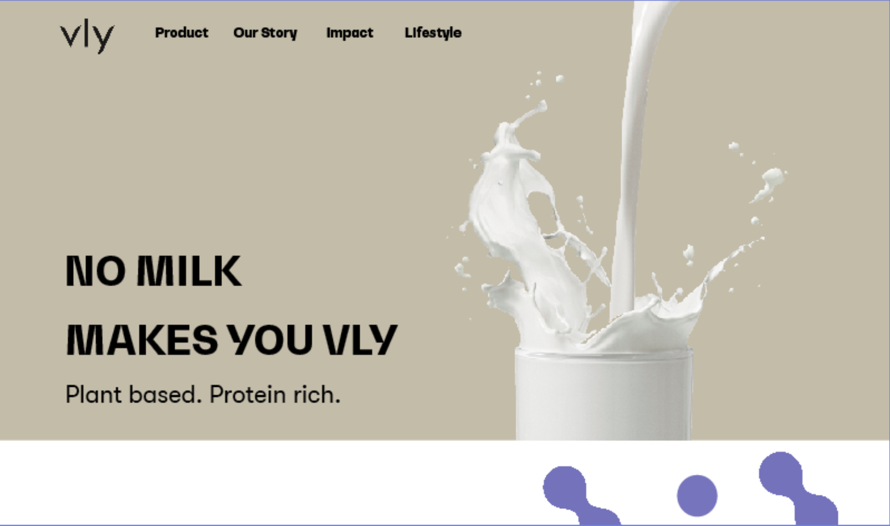

Nell Steinmetz

Vly Foods
After spending 4 weeks working with Vly Foods in Berlin, Germany, I redesigned their website using Shopify and Adobe InDesign in order to better represent their voice and branding. Vly Foods develops and markets plant-based dairy alternatives using split-pea protein in order to accelerate the transition from animal to plant-based protein.


 

 



 





To interact with the final mockup of the website, click here